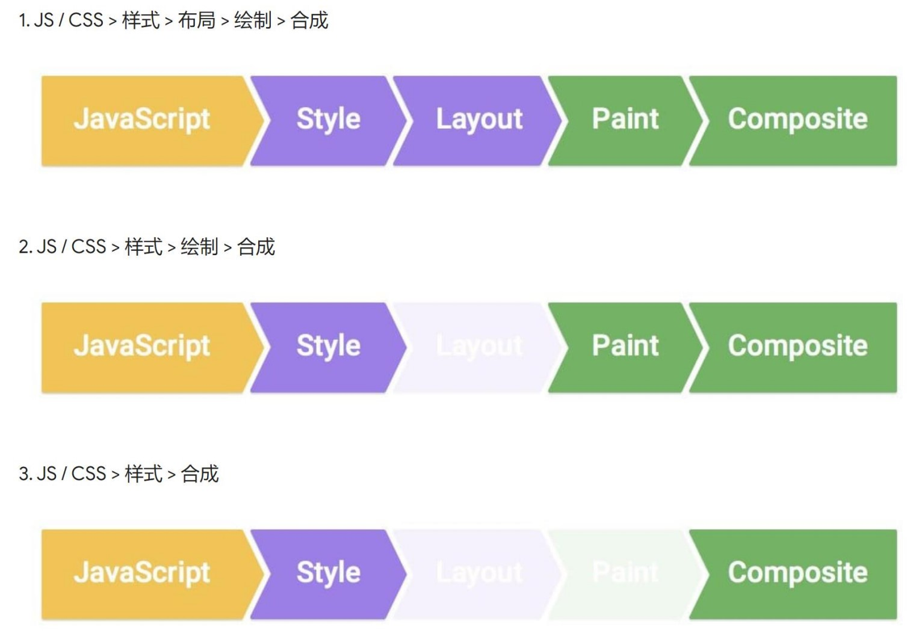

CSS动画
动画的概念
- 定义
由许多的静止画面（帧），以一定的速度（每秒30张），连续播放，内眼因视觉残象产生的错觉，以为是活动的画面。大部分影视24帧/s就可以正常播放，游戏需要30帧/s。
浏览器的渲染原理
- 步骤
- 根据HTML构建HTML树（DOM）
- 根据CSS构建CSS树（CSSOM）
- 将两棵树合并成一颗渲染树（render tree）
- Layout布局（文档流、盒模型、计算大小、位置）
- Paint绘制（把边框颜色、文字颜色、阴影等画出来）
- Compose合成(根据层叠关系展示画面)
- DOM、CSSOM、render tree
三种更改样式的方法
全走
div.remove()会删除DOM里面的元素，其他元素relayout。要走全部过程，重新布局，重新绘制，重新合成。跳过Layout
改变背景颜色，因为只是改变背景颜色，布局没有发生变化，所以就跳过了布局跳过layout和paint
改变transform，只需要composite
查看更改哪些属性,CSS怎么绘制 csstriggers
chrome里查看绘制过程

transform
transform的MDN
经验:
- 一般需要配合
transition过度 - inline元素不支持transform，需要先变成block
transform属性允许你旋转、缩放、倾斜、平移给定元素，具体有以下四个属性：
- translate
translate是控制元素平移的1
2
3
4
5
6transform:translateX(200px)
// X轴水平移动200px
transform:translateY(200px)
// Y轴垂直移动200px
transform:translateZ(1000px)
// Z轴是我们视线的那根轴，要看出变化，要给父元素加上perspective:1000px //我们眼睛离视点1000px
- 利用translate做绝对居中
1
2
3
4
5
6.box{
positon:absolute;
top:50%;
left:50%;
transform:translate(-50%,-50%);
}
scale
scale是控制元素缩放的1
2
3
4
5
6transform:scaleX(1)
//让元素在X方向上放大1倍
transform:scaleY(1)
//让元素在Y方向上放大1倍
transform:scale(1,1)
//以上两个的缩写形式rotate
rotate是控制元素旋转的1
2
3
4
5
6transform:rotateX(45deg)
//围绕元素的X轴，旋转45度
transform:rotateY(45deg)
//围绕元素Y轴，旋<F5>转45度
transform:rotateZ(45deg)
//围绕元素Z轴，旋转45度用途:一般用于360度旋转制作loading
skew
skew控制元素的倾斜的1
2
3
4
5
6transform:skewX(45deg)
//x轴歪斜45度
transform:skewY(45deg)
//y轴歪斜45度
transform(45deg,45deg)
//以上两者的缩写
- transform的组合写法
1
transform:scale(0.5)translate(-100%,-100%)
transiton
可以为一个元素在不同状态之间切换的时候定义不同的过渡效果。
语法:
- transiton:
属性名|时长|过渡方式|延迟|1
2transiton:left 200ms linear 3s
//left的变化，过渡时间200ms 过渡方式为linear 延迟3秒过渡 - 可以用逗号分隔两个不同属性
1
transition:left 200ms,top 400ms
- 也可以用all代表所有的属性
1
transition:all 200ms
- 过渡方式：linear匀速 | ease-in淡入 | ease-out淡出 | ease-in-out淡入淡出|
- transiton:
注意
并不是所有属性都能过渡
display:none => blcok 就是没办法过渡的。一边改成visibility:hidden => visible
animation
- animation语法
1
2
3
4
5
6
7animation: 时长|过渡方式|延迟|次数|方向|填充模式|是否暂停|动画名|
时长：总共的动画时间
过渡方式：跟ransiton取值一样
次数：动画完成几次，infinite重复做
方向：reverse | alternate | alternate-reverse|
填充模式：none | forwards | backwards | both |
是否暂停：paused | running | - keyframes语法
animation描述动画怎么样变化，@keyframes就是描述动画每个时间段要做什么例子：JSbin1
2
3
4
5
6
7
8@keyframes 动画名{
from{
}
//最初的状态
to{
}
//最后的状态
}
资料参考：饥人谷
(完)